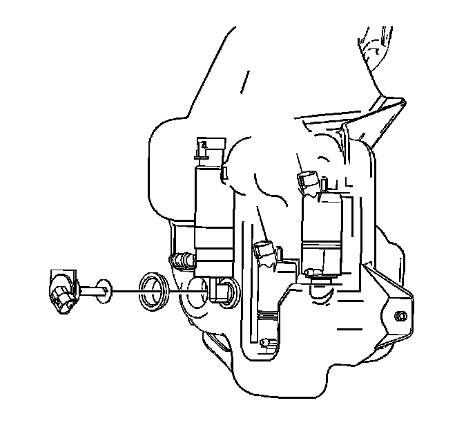
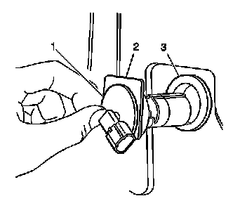

Washer Fluid Level Switch: Service and Repair
Washer Solvent Container Level Sensor Replacement
Removal Procedure

1. Remove the lower air deflector. Refer to Front Air Deflector Replacement (Service and Repair) .
2. Disconnect the electrical connector from the washer solvent level sensor switch.
3. Place a pan under the area where the level sensor will be removed in order to retain the lost solvent.
4. Drain the washer solvent into a suitable container.

5. Using 2 flat-bladed tools, pry outward the washer solvent container level sensor switch (1) from the washer solvent container.
6. Remove the washer solvent level sensor switch from the container.
7. Remove the washer solvent container level sensor grommet (3) from the washer solvent container and discard.
Installation Procedure
1. Install the new washer solvent level sensor switch grommet (3) into the container.
2. Install the washer solvent level sensor switch (1) into the washer solvent container.
Important: The square side (2) of the level sensor switch must point upward upon installation.
3. Apply equal inward pressure in order to seat the level sensor switch to the grommet.

4. Connect the electrical connector to the washer solvent level sensor switch.
5. Install the lower air deflector. Refer to Front Air Deflector Replacement (Service and Repair) .
6. Fill the washer solvent container with washer solvent.